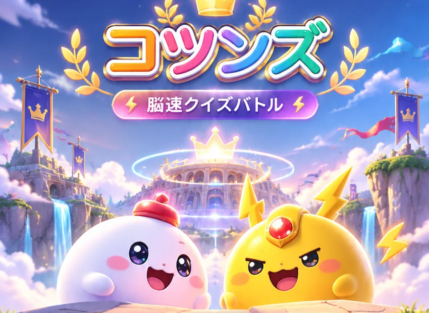

✦だれが遊ぶ？✦
アカウントをえらんで、あいことば（4けた）でログインしてね。
iアカウントと記録は、このスマホのブラウザの中に保存されます。サーバーには送りません。機種変更のときは「別のスマホへ引き継ぐ」を使ってね。
招待が届いています
バトル
コツcoinは友達対戦・ランク戦の順位でもらえます（N人なら1位はNコイン…最下位は1コイン。ランク戦は2倍）。覚醒石は称号とランク戦のシーズン報酬で手に入ります。このバージョンは無料の体験版で、お金での購入はありません。レア度で対戦の強さは変わりません。
キャラ
同じキャラのS1が3体そろうと進化できます。タップでくわしく。
図鑑
ランク戦
見知らぬ人と対戦します。相手に見えるのはニックネームとキャラだけです。本名はニックネームに入れないでね。
部屋コード
ランク戦人数がそろったら自動で始まります
近くの人とスマホをコツン！

まだコツンしていません
HP
10